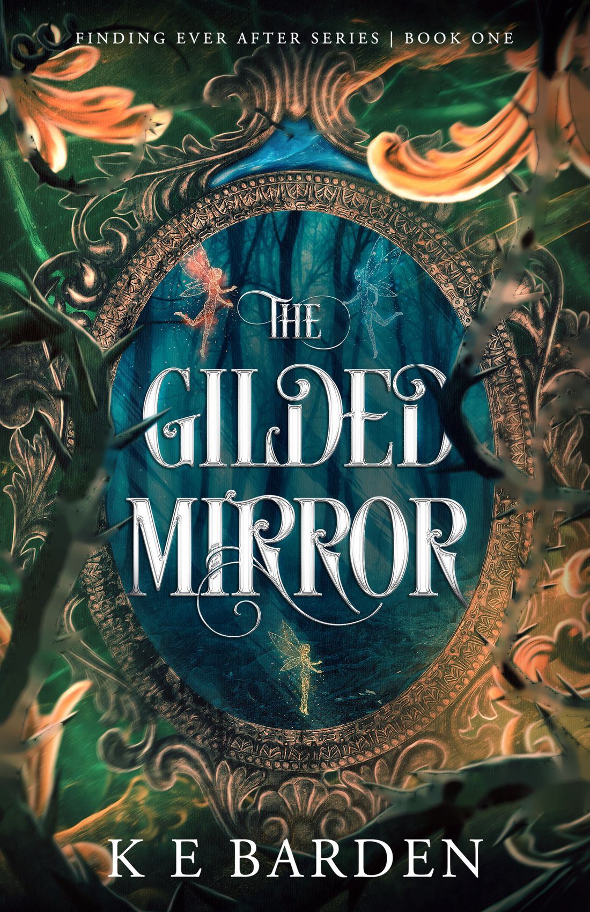
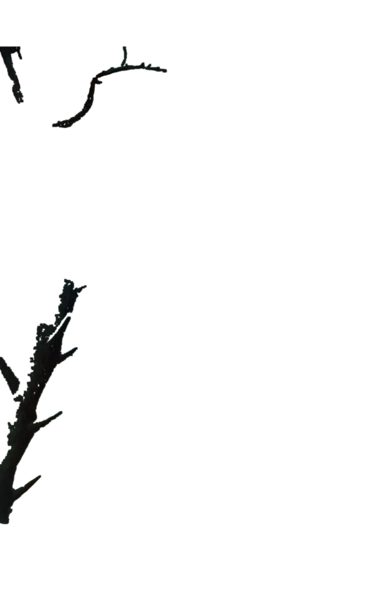
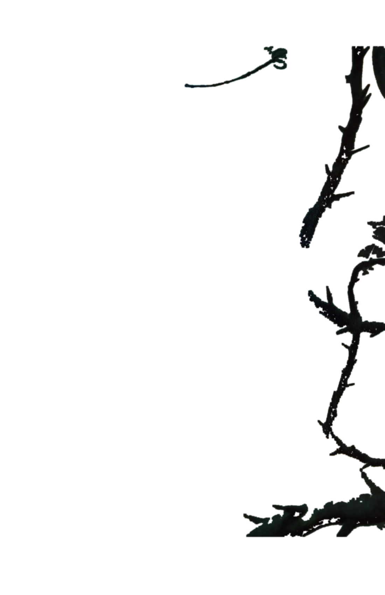
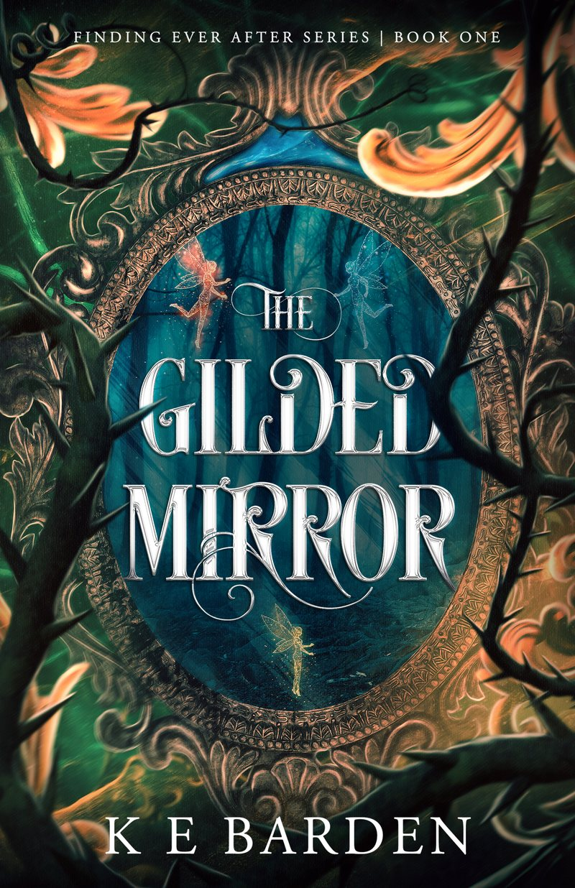
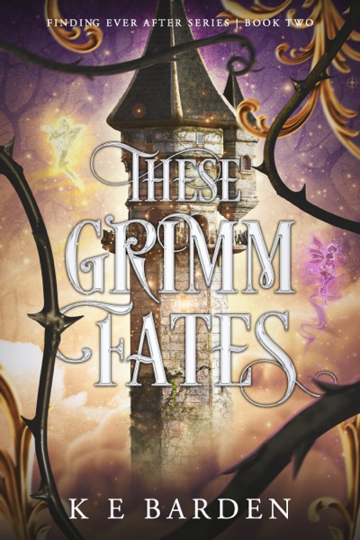
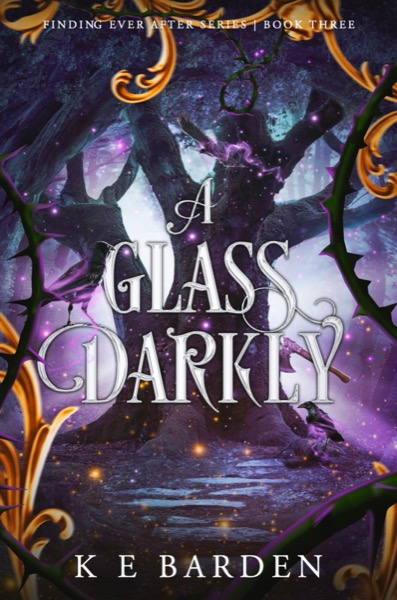
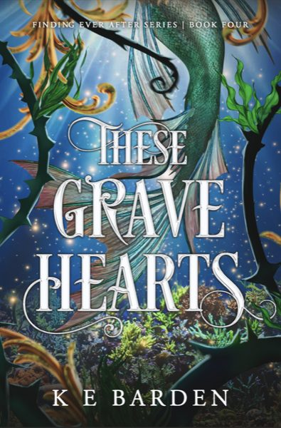
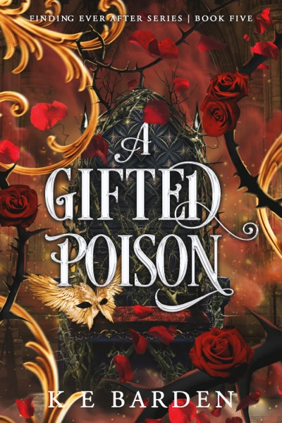

Eveline Rafter has only ever sought one thing: to avenge her father.
She can find lost things. A watch. A purse. Even a person.
Find the books

The Gilded Mirror
Hired by the Huntsman to find the lost princess Snow, Eve sets out with her closest companion Porchid, a Riverbell fairy, and a pair of twin golden knives that never miss.
The kingdom is ruled by an evil queen who consumes hearts for youth and power. There are dwarves with split personalities and a prince whose most endearing quality is his sneeze. And the princess is encased in a crystal coffin, hidden away in a magic realm.
"Like I was reading a Shrek prequel." Tamara, IndieBook Reviewer
Finding Ever After
A dark retelling of the original Grimm tales, five books in, every one framed in the same briars.




Kim
K E Barden was born in Canberra and writes in Brisbane, around a full-time job.
The Gilded Mirror was written entirely on a mobile phone, and the dent in her pinkie finger proves it.
It was shortlisted for the Queensland Writers Centre's ADAPTABLE program, where she pitched it to producers for the screen. When she isn't writing she's spoiling a high maintenance cat or building fairy castles.
Come and find her
30 October to 1 November, Bokarina
- All five booksPaperback and hardback, and the whole series as a bundle.
- The signature perfumeA 10ml bottle made for the series.
- Character tarot cards and bookmarksOne for each of the Finding Ever After cast.
- Next: Unbound Pages 2027Pre-orders are already open.